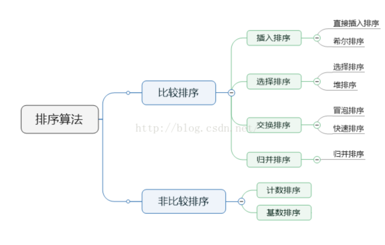

什么是排序
排序（sorting） ）的功能是将一个数据元素的任意序列，重新排列成一个按关键字有序的序列。
其确切的定义为：
假设有n个数据元素的序列{R 1 , R 2 , … , R n }，其相应关键字的序列是{K 1 , K 2 , … , K n }，
通过排序要求找出下标 1 , 2 , … , n的一种排列p 1 , p 2 , … , p n ，使得相应关键字满足如下的非递减（或非递增）关系
Kp 1 ≤ Kp 2 ≤ … ≤ Kp n
这样，就得到一个按关键字有序的纪录序列：{ Rp 1 , Rp 2 , … , Rp n }
内部排序和外部排序
一类是整个排序过程在内存储器中进行，称为内部排序；
另一类是由于待排序元素数量太大，以至于内存储器无法容纳全部数据，排序需要借助外部存储设备才能完成，这类排序称为外部排序。
本章介绍的排序方法都属于内部排序
稳定排序和不稳定排序
如果在待排序的序列中存在多个具有相同关键字的元素。
假设K i =K j （1≤ i≤ n，1≤ j≤ n，i≠j），若在排序之前的序列中R i 在R j 之前，
经过排序后得到的序列中R i 仍然在R j 之前，则称所用的排序方法是 稳定的；
否则，当相同关键字元素的前后关系在排序中发生变化，则称所用的排序方法是 不稳定的。
无论是稳定的还是不稳定的排序方法，均能完成排序的功能。
在某些场合可能对排序有稳定性的要求，此时就应当选择稳定的排序方法。
例如，假设一组学生纪录已经按照学号有序，现在需要根据学生的成绩排序，当分数相同时要求学号小的学生在前，
显然此时对分数进行排序就必须选择稳定的排序方法。
排序前 ( 56, 34, 47, 23, 66, 18, 82, 47 )
若排序后得到结果( 18, 23, 34, 47, 47, 56, 66, 82 )，则称该排序方法是稳定的
若排序后得到结果( 18, 23, 34, 47, 47, 56, 66, 82 )，则称该排序方法是不稳定的
比较排序和非比较排序
大部分排序都是需要通过比较首先来判断大小，作为排序的依据的。
但是也有例外的，比如计数排序、基数排序，不需要进行比较。
插入排序：将无序子序列中的一个或几个记录“插入”到有序序列中，从而增加记录的有序子序列的长度
交换排序：通过“交换”无序序列中的记录从而得到其中关键字最小或最大的记录，并将它加入到有序子序列中，以此方法增加记录的有序子序列的长度
选择排序：从记录的无序子序列中“选择”关键字最小或最大的记录，并将它加入到有序子序列中，以此方法增加记录的有序子序列的长度
归并排序：通过“归并”两个或两个以上的记录有序子序列，逐步增加记录有序序列的长度
排序类型

一般说是八大排序类型
另外还可以加上非比较的计数排序、选择排序中的树形选择排序、插入排序中的折半插入排序
排序效率
时间复杂度最高的就是三种基本排序：直接插入、简单选择、冒泡排序。
建议优先掌握直接插入、简单选择、冒泡排序、快速排序